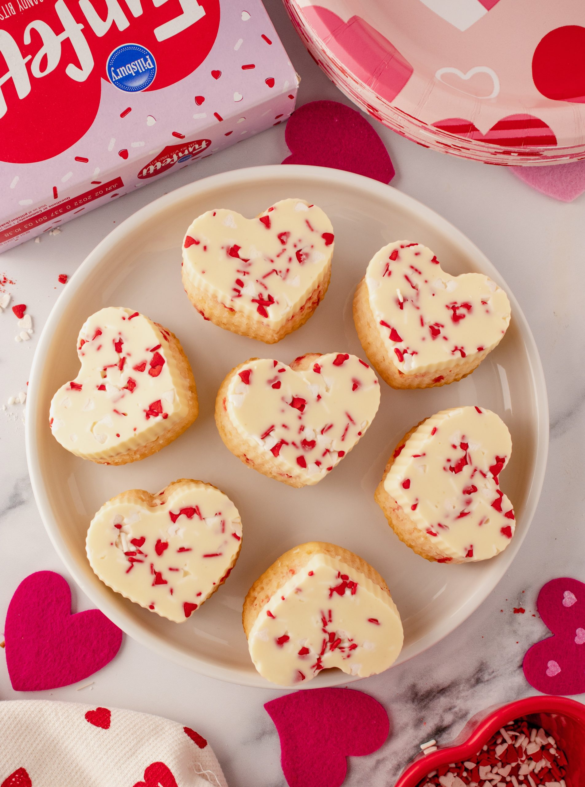

Home
Recipes
Cakes
Cupcakes
Cookies
All Recipes
About
Contact
Funfetti Valentine's Mini Heart Cakes Recipe
Very delicious recipe for a sweet Valentine's Day!

Ingredients
1 box Pillsbury Funetti Valentine's Day Cake Mix
Additional ingredients to prepare cake mix per package directions
1 cup water
1/2 cup oil
3 whole eggs
Funfetti valentine's day sprinkles from frosting tub
White chocolate chips (12 oz)
Silicone heart molds
Instructions
PREHEAT oven to 325°F.
In a large bowl, prepare cake mix according to package directions.
Spray silicone molds well with non-stick cooking spray.
FILL each cavity halfway with cake batter. Place each mold onto a baking sheet and transfer to the oven. Bake for 10-15 minutes, until the edges are light and golden brown and a toothpick inserted comes out clean.
Let the cake molds chill for 15 minutes before removing. Remove cakes and let cool.
MELT white chocolate chips in a microwave safe bowl, stirring once every 30 seconds until melted. Add Funfetti Valentine's sprinkles into the empty silicone molds.
Using a spoon, carefully add melted chocolate to the bottom of each mold. Press cooled cake into each cavity on top of the melted chocolate. Transfer to the freezer for 2 hours.
REMOVE from freezer and carefully invert the molds and serve!